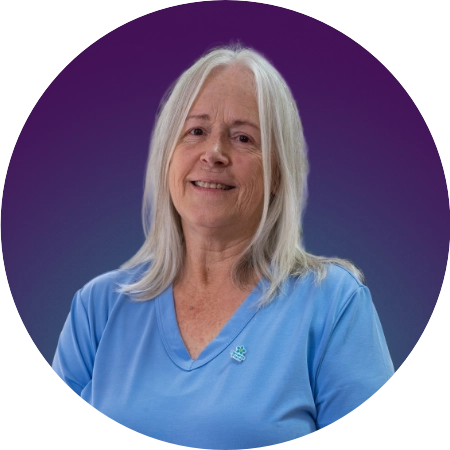
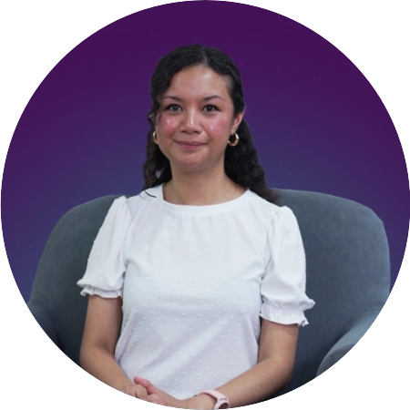

El estigma puede aparecer de formas muy cotidianas. Puede estar en una mirada, en un comentario, en la manera en que alguien deja de tomar en cuenta a una persona después de conocer su diagnóstico, o incluso en las propias ideas que una persona tiene sobre lo que significa vivir con demencia.
A veces, el miedo a ser juzgado hace que la persona deje de contar lo que le pasa, evite ciertas actividades o se aleje de otras personas. También puede llevar a las familias a esconder el diagnóstico o a dejar de pedir ayuda por temor a lo que los demás puedan pensar. Y esto importa porque mantenerse conectado con otras personas sigue siendo parte de la vida. Tener demencia no significa dejar de tener intereses, opiniones, vínculos o cosas que aportar. Tampoco significa que quien cuida deba hacerlo todo en silencio o sin apoyo.
Derribar este muro empieza por cambiar la conversación: hablar de la demencia sin reducir a la persona a su diagnóstico, escuchar lo que necesita y reconocer que pedir ayuda no es motivo de vergüenza.
El estigma no desaparece de un día para otro. Pero cada vez que hablamos de la demencia con respeto, incluimos a la persona en las decisiones y dejamos de asumir lo que puede o no puede hacer, estamos haciendo un poco más pequeño ese muro.
Fuentes:
Estigma hacia la demencia: una revisión. (2015). Revista Chilena de Neuropsiquiatría.
Estigma hacia la demencia: una revisión. (2015). Revista Chilena de Neuropsiquiatría.
El síndrome del cuidador en los procesos con deterioro cognoscitivo (demencia). Atención Primaria.
Bosch Bayard, R. I., Llibre Rodríguez, J. de J., Zayas Llerena, T., & Hernández Ulloa, E. (2017). Superar el estigma hacia la demencia, un reto para la sociedad cubana. Revista Cubana de Enfermería.
Hablar de demencia no siempre es fácil. Para algunas personas, decirlo en voz alta significa enfrentarse al miedo de ser juzgadas, tratadas de manera diferente o dejar de ser tomadas en cuenta.
Por eso, algunas personas prefieren ocultar su diagnóstico. Los datos más recientes muestran que no se trata de algo poco común: en la encuesta internacional del World Alzheimer Report 2024, entre 19% y 36% de las personas encuestadas dijeron que mantendrían en secreto un diagnóstico de demencia, dependiendo del nivel de ingresos del país. El propio informe señala que el estigma puede convertirse en una barrera para buscar ayuda y favorecer el aislamiento social.
El problema es que el silencio no necesariamente protege. Puede hacer que una persona deje de pedir apoyo, se aleje de sus actividades habituales o evite hablar de los cambios que está viviendo. Y cuando una familia también decide callar por miedo al qué dirán, puede terminar enfrentando el cuidado con menos apoyo del que necesita.
El estigma también cambia la manera en que los demás se relacionan con una persona con demencia. Puede hacer que otros decidan por ella, dejen de preguntarle su opinión o asuman que ya no puede participar en determinadas actividades. Poco a poco, la persona puede quedar fuera de conversaciones y decisiones que siguen teniendo que ver con su propia vida.
Por eso, hablar de demencia no significa contarle todo a todo el mundo. Significa poder hablar de ella sin vergüenza y decidir, junto con la persona, quién necesita saberlo, qué apoyo necesita y cómo quiere seguir participando en su vida. Romper el silencio no elimina el estigma de un día para otro. Pero permite que la demencia no termine aislando a la persona de quienes la rodean.
Fuentes:
Alzheimer’s Disease International. (2024). World Alzheimer Report 2024: Global changes in attitudes to dementia. Alzheimer’s Disease International.

Cuidar a una persona con Alzheimer u otra demencia puede convertirse poco a poco en una tarea que ocupa casi todo el día: organizar medicamentos, acompañar a consultas, resolver cambios de conducta, ayudar con las actividades cotidianas y, al mismo tiempo, tratar de mantener la vida personal y familiar en marcha.
Ese desgaste no es “simplemente estar cansado”. La sobrecarga del cuidado puede afectar el estado de ánimo, el sueño, la salud física y las relaciones de quien cuida. En Estados Unidos, por ejemplo, 59% de los cuidadores de personas con demencia reportan niveles altos o muy altos de estrés emocional. Y muchas veces las señales aparecen poco a poco con irritabilidad, dificultad para descansar, dejar de ver a amigos o hacer actividades que antes disfrutaban, sentirse constantemente preocupado o incluso experimentar enojo y frustración hacia la persona que se cuida.
El problema es que el agotamiento puede volverse invisible. Quien cuida puede pensar que descansar es egoísta, que pedir ayuda significa no poder con la responsabilidad o que “nadie más lo va a hacer”. Pero cuidar no debería significar desaparecer de la propia vida.
Compartir responsabilidades, pedir apoyo a otros familiares, buscar orientación profesional, acudir a un grupo de apoyo o recurrir a servicios de respiro y centros de día son formas de hacer que el cuidado sea sostenible. La evidencia muestra que distintas intervenciones pueden ayudar a disminuir la sobrecarga de quienes cuidan.³
Pedir ayuda no significa querer menos a la persona que se cuida. Significa reconocer que el cuidado también necesita una red.
Fuentes:
Alzheimer’s Association. (2024). 2024 Alzheimer’s disease facts and figures. Alzheimer’s & Dementia, 20(5).
2. Alzheimer’s Association. (s. f.). El estrés en los cuidadores.
3. Rodríguez-Alcázar, F. J., Juárez-Vela, R., Sánchez-González, J. L., & Martín-Vallejo, J. (2024). Interventions effective in decreasing burden in caregivers of persons with dementia
Cuidar a una persona con Alzheimer u otra demencia puede ser una experiencia muy solitaria. Las dudas, el cansancio y las responsabilidades se acumulan, y muchas veces parece que nadie más entiende lo que estamos viviendo.
Los grupos de apoyo, presenciales o virtuales, pueden ofrecer algo que va más allá de la información: la posibilidad de encontrarse con otras personas que atraviesan situaciones similares. Estos espacios pueden ayudar a disminuir el aislamiento y la sobrecarga de quienes cuidan.
Pero construir comunidad también tiene que ver con la forma en que hablamos de la demencia. Decir “una persona que vive con demencia” en lugar de reducirla a “el enfermo”, preguntarle qué quiere y evitar hablar de ella como si no estuviera presente son formas sencillas de reconocer su dignidad y mantenerla dentro de las conversaciones y decisiones que afectan su vida.
No siempre podemos hacer que el camino sea fácil, pero sí podemos evitar que alguien tenga que recorrerlo en soledad. Una red de apoyo también se construye cuando dejamos de hablar de la demencia con vergüenza y empezamos a hablar de ella en comunidad.
Fuentes:
Animal Político. (2026). Guía para cuidadores: cómo encontrar redes de apoyo virtuales para enfrentar la demencia.
ReachLink. (2026). Opciones de tratamiento y recursos de apoyo para la demencia.
Alzheimers.gov. (2024). Consejos para los cuidadores y las familias de personas con demencia.
En México, gran parte del cuidado ocurre dentro de las familias y recae de manera desproporcionada sobre las mujeres. En 2022, 32 millones de personas participaban en tareas de cuidado; 24 millones eran mujeres y 7.9 millones, hombres.
Esto significa que cuando una persona necesita cuidados de largo plazo, la familia suele convertirse en la principal red de atención. Pero cuidar no debería depender únicamente de cuánto tiempo, dinero o energía tenga una familia disponible. La Comisión Económica para América Latina y el Caribe (CEPAL) señala que México enfrenta una alta demanda de servicios de cuidado y una oferta todavía insuficiente, con importantes desigualdades de género.
Cuando el sistema no alcanza, la consecuencia no es solamente el cansancio de quien cuida. También puede significar dejar de trabajar, reducir ingresos, postergar proyectos personales o asumir en soledad responsabilidades que deberían ser compartidas entre familias, comunidades, instituciones y Estado.
Cuando reconocemos esta realidad, cambiamos la pregunta: “¿por qué la familia no puede con todo?” y comenzamos a cuestionarnos: “¿qué necesitamos construir para que nadie tenga que hacerlo todo por su cuenta?”
Cuidar también es una responsabilidad colectiva.
Fuentes:
Comisión Económica para América Latina y el Caribe (CEPAL). (2024). Cuidar en México: del ámbito familiar a un sistema público. Naciones Unidas
{kind=link}
{kind=link}
{kind=link}
{kind=link}
{kind=link}